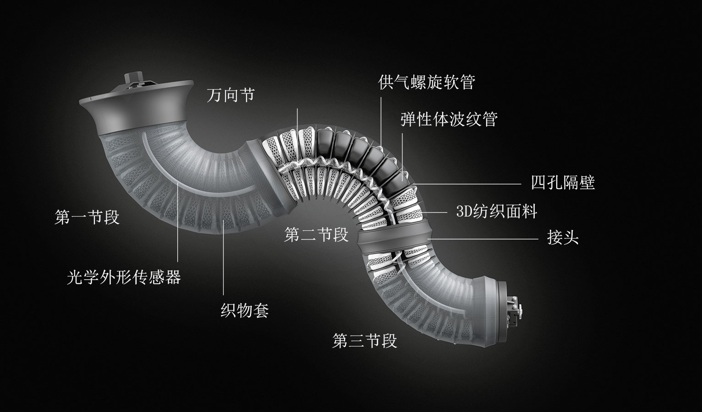

BionicMotionRobot
具有自然运动形式的轻型机器人
无论是敏感、柔和、强大或动态——BionicMotionRobot从象鼻和章鱼触须的运动中获得启发。气动轻型机器人拥有十二个
自由度，可通过约3千克的工作负载支撑自身重量。
BionicMotionRobot的手臂由三个基础节段构成，每段均由四个气动波纹管驱动。Festo Motion Terminal
(数字控制终端) 负责十二个柔性波纹管结构的复杂控制和调节任务。沿系
统纵轴线的光学外形传感器识别整体运动装置的位置、形状和互动。通过这种模块化设计，机器人手臂可在三个不同的方向上同时弯曲，并流畅地对其生物学样板的自然运动予以转化。
新型纤维技术释放完全力度潜力
波纹管由坚固的弹性体构成。每个均由独特的三维纺织面料包裹，与自然样板有着惊人的相似性：与章鱼触须的肌纤维类似，得
益于其纱线的独特编织，波纹管结构能够向所需运动方向进行伸展
，同时在另一个方向上获得限制。得益于这一创新纤维技术，整体运动装置的力度潜力能够首次获得最大释放。

模块化设计：洞察气动机器人手臂的内侧景观
以自然样板为灵感的柔性运动装置
柔性运动装置概念以2010年的仿生搬运助手为基础，后者以其安全可靠的人机合作特点荣获德国未来奖。此后，费斯托对能够
减轻员工在单调任务中的负担，同时不会造成风险的系统予以进一步深入
研究。这一领域在工厂的日常生产中愈加重要。
为未来协作式工作空间减负
产业变革需要人员、机器与数据的全新交互形式。在这一发展中，除了整个设备的数字联网外，基于机器人、且能够与人员在未
来携手合作的自动化解决方案扮演着关键作用。
得益于其安全的互动、自然的运动流程，BionicMotionRobot在多个行业拥有巨大的应用潜力：尤其在单调的、重复性
的甚至是危险的工作任务中，这一设备可作为辅助机器人在组装工序
中获得应用，并为员工减压。